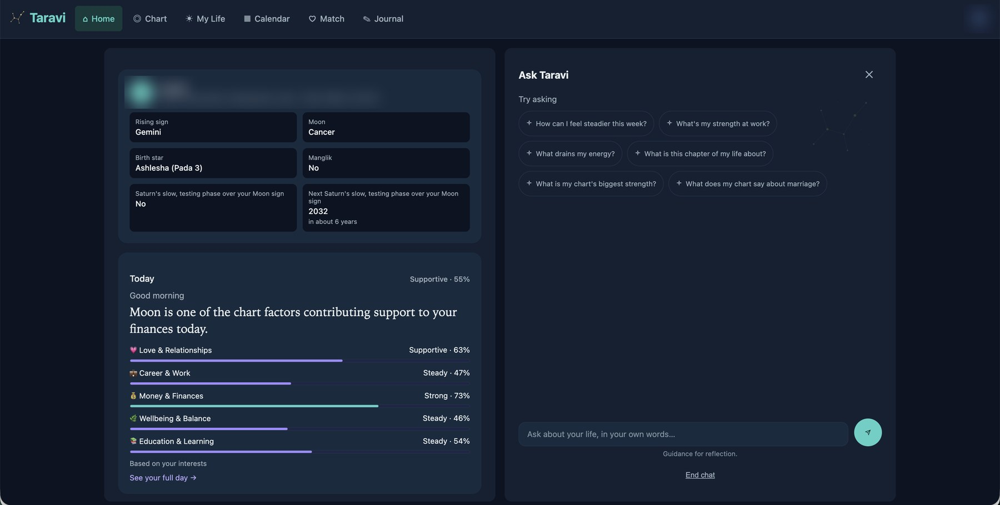
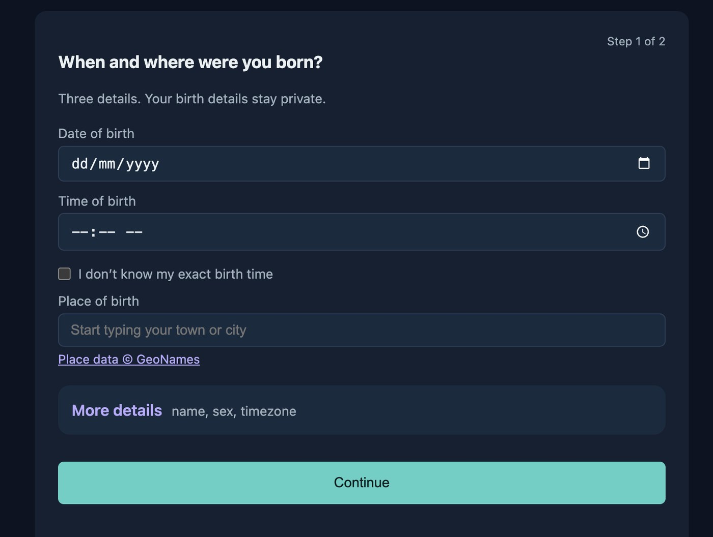
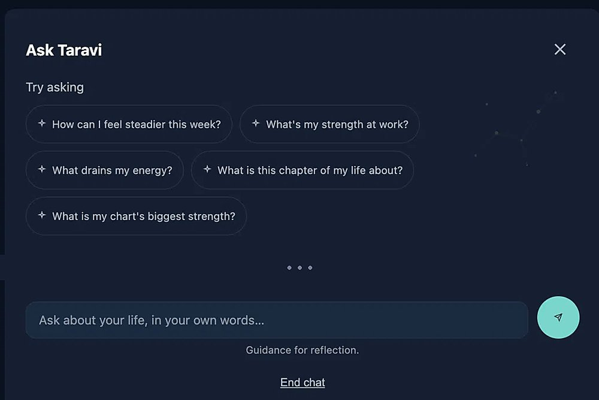
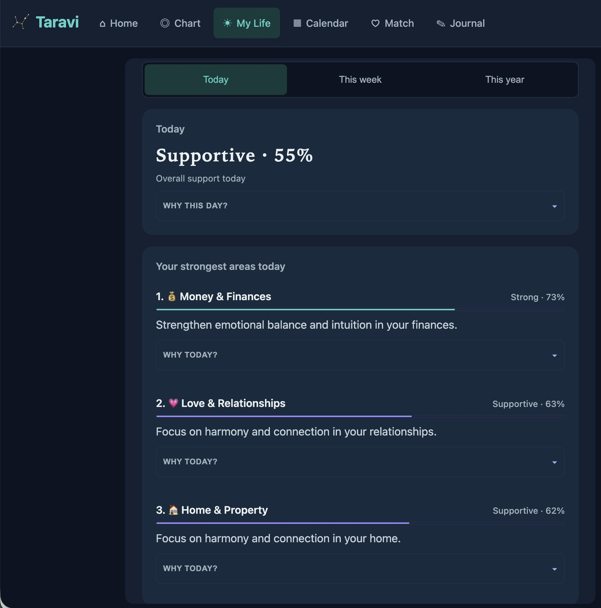
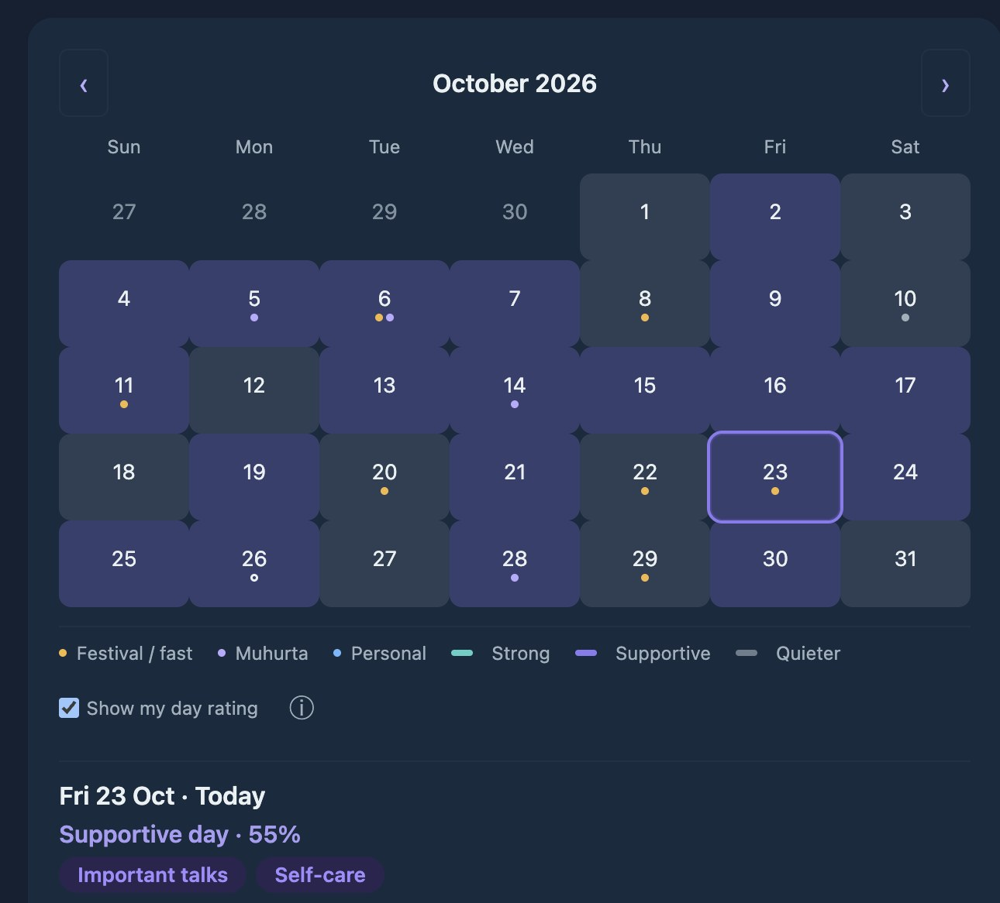
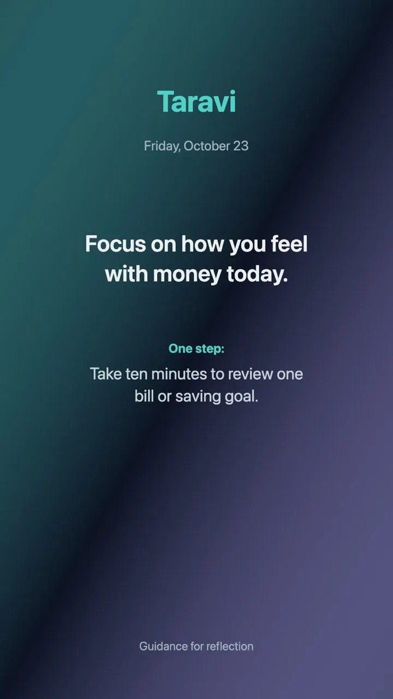
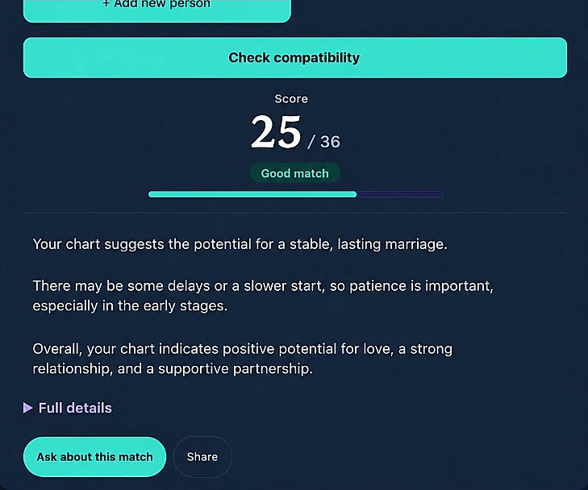
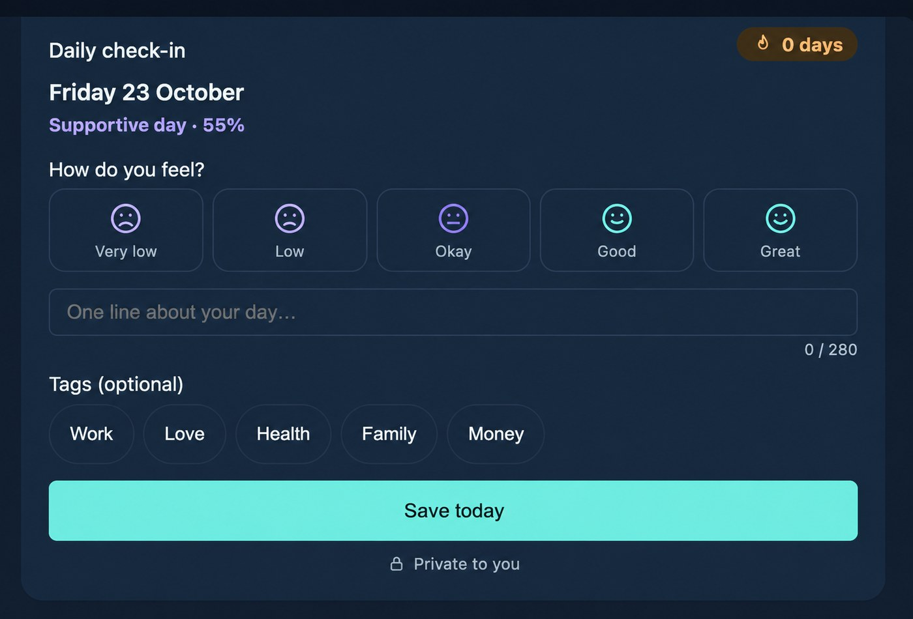

Pick what matters to you
We'll put these first on Home and in your suggested questions.
Taravi
Clear, kind answers from your own chart.
Ask about your life in your own words. Taravi calculates your birth chart and explains it in plain English. Every insight comes from your real chart.
Free to start.

From your birth details to a clear answer, in about a minute.
Date, time and place of birth. Not sure of the time? Just tick the box.

Every planet, house and timing period is worked out by fixed calculations. No guessing.
Clear, kind answers, and every answer is checked against your chart.

Tap a feature to see it.
Ask in your own words and get a clear, kind answer from your chart.

Today, this week and this year, each with a simple rating. Every rating has a “Why?” you can open.

A month view that shows which days look supportive.

A short line for your day, every morning on Home.

We'll put these first on Home and in your suggested questions.
After 9 pm, a gentle prompt to end your day and update your journal.
A 60-second guided breathing pause.
Compare two birth charts and see how they fit.

Note how you feel and what went well. Entries stay on your device.

$0
$9.99/month
or $79.99/year (save 33%)